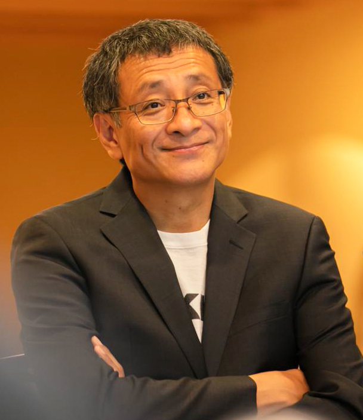
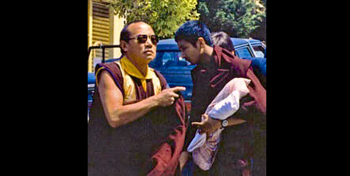
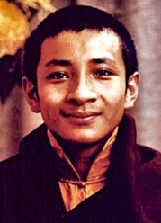
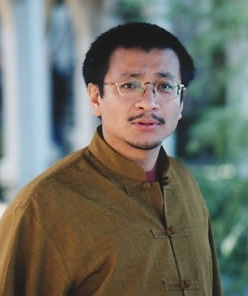
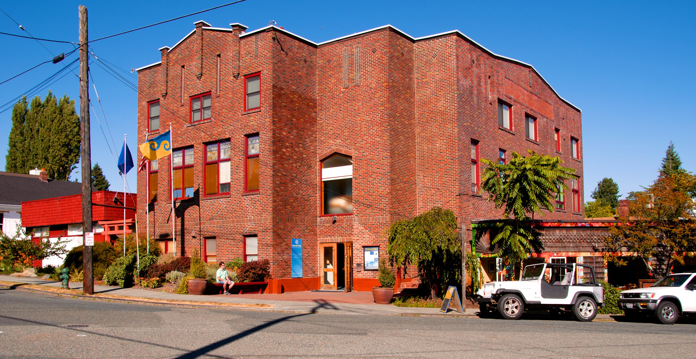
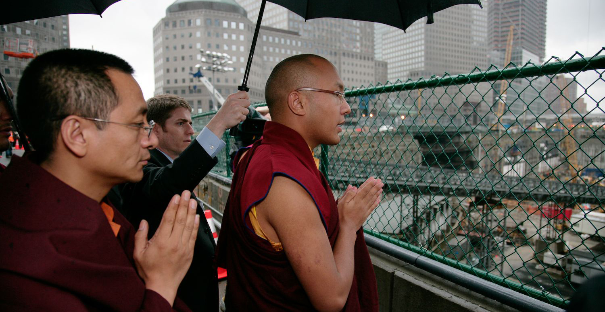

Dzogchen Ponlop Rinpoche
A short biography of the 7th Dzogchen Ponlop, and the lineage that came before him.
Who is Dzogchen Ponlop Rinpoche?

Dzogchen Ponlop Rinpoche is a leading Buddhist teacher in North America and an advocate of American and Western Buddhism. A lover of music, art and popular culture, Rinpoche is a tech-savvy poet, photographer, and visual artist, as well as a prolific author. He brings the essence of the Buddha’s message to modern audiences with humor and practicality. Rinpoche is founder and president of Nalandabodhi, an international network of Buddhist centers. He is also the founder of Nitartha International, a non-profit educational corporation dedicated to preserving the contemplative literature of East Asia.
Rinpoche is acknowledged as one of the foremost scholars and meditation masters of his generation in the Nyingma and Kagyu schools of Tibetan Buddhism. He is known for his sharp intellect, humor, and easygoing teaching style.
Rinpoche is author of several books, most recently Emotional Rescue: How to Work with Your Emotions to Transform Hurt and Confusion into Energy that Empowers You. Other titles include Rebel Buddha: A Guide to a Revolution of Mind, Mind Beyond Death, Wild Awakening: The Heart of Mahamudra and Dzogchen, and Penetrating Wisdom: The Aspiration of Samantabhadra. He is a frequent contributor to Buddhadharma: A Practitioner’s Quarterly and the Shambhala Sun. His writings also appear in issues of Best Buddhist Writing and other anthologies. Connect with Rinpoche’s news and teachings on Facebook and Twitter.
Birth
Rinpoche was born in 1965 at Rumtek Monastery in Sikkim, a small state in northeastern India. Rinpoche’s father, the late Damchoe Yongdu, was the General Secretary of His Holiness the 16th Gyalwang Karmapa, supreme head of the Karma Kagyu lineage of Tibetan Buddhism. Rinpoche’s mother, Lekshey Dolma, a lifelong Buddhist meditator, currently resides in upstate New York.

Lineage
His Holiness the 16th Karmapa and His Holiness the Dalai Lama recognized Rinpoche as a reincarnate lama of the Nyingma tradition, the seventh incarnation in the Dzogchen Ponlop lineage. He was formally enthroned as the 7th Dzogchen Ponlop at Rumtek in 1968, at the age of three. In addition to his being raised and trained by the Karmapa, Rinpoche’s formative years included studying intensively and receiving extensive lineage transmissions from some of the greatest Buddhist masters from Tibet’s pre-exile generation: Dilgo Khyentse Rinpoche, Kalu Rinpoche, Tulku Urgyen Rinpoche, Khenchen Thrangu Rinpoche (chief Abbot of the Kagyu lineage), Alak Zenkar Rinpoche, and Khenpo Tsultrim Gyamtso Rinpoche, his root guru. In 1979 (when Rinpoche was fourteen) the 16th Karmapa proclaimed Ponlop Rinpoche to be a heart son of the Gyalwang Karmapa and a holder of his Karma Kagyu lineage. In this way, Rinpoche came to hold the Kagyu lineage as well as the Nyingma lineage into which he was born.
Growing Up
Rinpoche lived at the Rumtek monastery in Sikkim (official seat of the Karmapas in exile), under the guardianship of the 16th Karmapa, where he began studying Buddhist philosophy at age twelve. He relates that he and the other reincarnated boys under the Karmapa’s charge slept right next to the Karmapa’s quarters, and that the Karmapa would wake them up very early every morning — at about 3 am — when they would begin their day.
At the request of the 16th Karmapa, Rinpoche gave talks to large groups of the Karmapa’s European students who were visiting Rumtek Monastery when Rinpoche was twelve, the same year he began his philosophical studies. Since that time, Rinpoche has had many European friends and has traveled and taught extensively within Europe.

Study & Meditation Training
In 1981, at fifteen, Rinpoche entered Rumtek Monastery’s shedra, or monastic college, the Karma Shri Nalanda Institute for Higher Buddhist Studies. There he trained in the traditional Indo-Tibetan intellectual disciplines of Buddhist philosophy, psychology, logic, and debate. Rinpoche’s teachers and colleagues alike observed him to be a remarkably bright student with a formidable talent for debate. He was appointed by Khenchen Thrangu Rinpoche as a Teaching Assistant and charged with the task of developing the shedra’s library by the Third Jamgon Kongtrul Rinpoche. Later, he would become the primary assistant to Khenpo Tsültrim Gyamtso Rinpoche, transcribing, editing, and compiling some of Khenpo Rinpoche’s most famous and influential philosophical compositions. The first elected president of the college’s Students Union, Rinpoche completed the full shedra curriculum in 1991, graduating first in his class and receiving the degrees of Acharya and Ka-Rabjampa.
Rinpoche holds lineages in both of Indian and Tibetan Buddhism’s two most profound traditions of meditation: Mahamudra (“the great seal”) and Dzogchen (“the great perfection” or “great completion”). Under the close personal tutelage of the greatest masters of the 20th century, Rinpoche has trained intensively in the wide variety of methods that these traditions offer for gaining a thorough understanding of the mind and an expansive, direct realization of the mind’s true nature. Some of the masters who guided Rinpoche in meditation through instruction and transmission include the 16th Karmapa, Dilgo Khyentse Rinpoche, Tulku Urgyen Rinpoche, Nyoshul Khen Rinpoche, and his present-day root guru, the great scholar-yogi Khenpo Tsültrim Gyamtso Rinpoche.
Going West
Rinpoche first traveled to Europe, the United States, and Canada in 1980, at the age of fourteen, accompanying the 16th Karmapa on one of the Karmapa’s several tours of the West. This was a key moment of early exposure for Rinpoche to the fledgling forms of Buddhism that had only recently begun to take root in the West. Upon his return to Rumtek, Rinpoche continued to make the acquaintance of itinerant American and European spiritual seekers that had been visiting Rumtek since the 70’s, some of whom became enduring friends, others Rinpoche’s personal students.
Rinpoche began his own touring activity in the West in 1985, teaching at Buddhist centers in many European countries during the annual winter vacations of Karma Shri Nalanda Institute. Toward the completion of his shedra studies, at the dawn of the nineties, Rinpoche began teaching in Southeast Asian countries, including Hong Kong, Malaysia, Singapore, Taiwan, and the Philippines.
After graduating from the shedra in 1991, Rinpoche lived for a time in New York City, attending the American Language Program and religious studies classes at Columbia University. There he came to appreciate the skillfulness of certain Western pedagogical methods. At the same time, greater access to computers and the internet gave Rinpoche the vision to use this technology to preserve ancient Tibetan literature and art.

The Nineties
Rinpoche’s early experiences in the United States included exposure to the creative and intellectual energies of his urban environment. He became especially interested in art, film, and graphic design. He also took note of social issues and the dramas of the American political process. His contact with an open-minded American culture and a new generation of students who were interested in finding a genuine spiritual path deepened Rinpoche’s thinking on how best to teach Buddhism in the West. He began to develop a vision of a genuine lineage of Western Buddhism, one that would be unencumbered by the social, religious, and political cultures of Buddhism’s past, which often overshadowed the original teachings of and the principles emphasized by the Buddha.
In 1992, Rinpoche was invited to assume the spiritual direction of a Buddhist community in Vancouver, BC, Canada-another dynamic urban center. Vancouver became Rinpoche’s first home in North America, and he lived there for several years teaching to a growing community of students. He also traveled widely during this period, responding to teaching invitations across the United States, Canada, Europe, and Australia.
Nitartha International: Ancient Wisdom for the Modern Mind
Rinpoche’s interest in technology, coupled with his love of Buddhist literature, led him in 1994 to found Nitartha International, a non-profit New York educational corporation with headquarters in Seattle, WA. Nitartha International preserves endangered Asian texts and art in digital formats and in modern-style print publications and provides technological and educational resources to likeminded scholars, software developers and professionals from varying fields. The broader mission of Nitartha International is not only to preserve the rarefied wisdom of East Asian contemplative traditions, but to modernize its delivery and make it accessible to modern people in the East and the West alike.
Nitartha Institute
In 1996, through the inspiration of Khenchen Thrangu Rinpoche, Rinpoche established a division of Nitartha International that he named Nitartha Institute, a systematic and comprehensive program of higher Buddhist studies. The Institute’s curriculum reflects the rigorous philosophical training of Rinpoche’s own monastic college, yet adapts it for Western students and integrates it with the practice of meditation. Students who have completed the foundational and intermediate curriculum, passing all examinations, may apply to the Institute’s three-stage teacher training program. Once the stages are accomplished, a teacher in training is eligible to become an authorized teacher of Nitartha Institute. With Nitartha Institute, Rinpoche sought to combine the best of Eastern and Western scholarly methodologies to create a vehicle capable of transmitting the subtle philosophies and powerful wisdom of classical Indian Buddhism. Rinpoche has taught in great breadth and depth over many years on several of the key sections of the traditional shedra curriculum, including the Middle Way, Transcendent Knowledge, and Valid Cognition. Many of Rinpoche’s courses at Nitartha Institute marked the first time that the topic matter he elucidated had been presented in detail in the English language. As a result of Rinpoche’s teachings and other efforts, Nitartha Institute has developed a sophisticated system of study, complete with a rich library of its own publications and study support materials unparalleled in the West. Rinpoche has installed a large of Western students as faculty members who in turn regularly teach the Core and Intermediate Curriculums of Nitartha Institute throughout North America.
A Pioneer in Translation
In the context of Nitartha Institute projects, as well as publications of Nitartha International and other organizations, Rinpoche has initiated and guided a great many translations of key, never-before-translated works of Indian and Tibetan Buddhist philosophy and rare meditation instructions. Rinpoche’s passion for Buddhist wisdom to be just as rich and informative in the West as it has been in the East, combined with his exceptional skill with the English language and deep training in Tibetan academic disciplines, has made him a unique contributor to the field of translation.
Nalandabodhi: Gateway to the Buddhist Science of Mind
In January of 1996, Rinpoche was invited to join the faculty of the Religious Studies department at Naropa University, in Boulder, Colorado, as a visiting professor. The combination of his scholarly prowess, personable demeanor, and surprising knowledge of popular culture drew great interest. In 1997, in response to the requests of students wishing to study formally with him, Rinpoche founded his spiritual community, Nalandabodhi, which soon developed into an international network of Buddhist study and practice centers.
In 1999, after years of constant travel, Rinpoche moved his residence to the port city of Seattle, Washington, just a short distance south from his Vancouver home. With the encouragement and blessing of his guru, Khenpo Tsultrim Gyamtso Rinpoche, Rinpoche, in 2003, opened the doors to the primary seat of his activities in North America: Nalanda West, “Center for American Buddhism.”
To the great fortune of Rinpoche’s students, Rinpoche developed comprehensive paths of both study and meditation, complete with extensive and accessible support materials, for the members of Nalandabodhi, beginning with the fundamentals and culminating with opportunities to practice some of the most profound Buddhist methods for awakening in a context of a lay householder lifestyle. Rinpoche has convened and taught at an annual, private retreat for the members of Nalandabodhi since 1999.

A New Century
Rinpoche continues to teach extensively in the west and in asia, as well as to administer Nalandabodhi and Nitartha International. He is a briiliant administrator. He jokes with his students that he is “the 7th CEO” (instead of the 7th reincarnation of the Ponlop Rinpoches). He believes that teachers have the role of not only teaching, but also creating a container to hold the teachings — the teaching organization. In this way, Rinpoche is both the spiritual leader of Nalandabodhi and its CEO.
In 2005, as an expression of his commitment to the development of Western Buddhism, and at the encouragement of his main teacher, Khenpo Tsültrim Gyamtso Rinpoche (as well as an expression of his administrative role) Rinpoche appointed five of his Western students to be senior teachers within his lineage for the Nalandabodhi sangha. He gave them the title Mitra (“spiritual friend”) and authorized them to impart a broad range of teachings and carry significant spiritual responsibilities in relation to the students of Nalandabodhi.
Statesman and Diplomat
In 2007, Rinpoche was appointed by His Holiness the 17th Gyalwang Karmapa, Ogyen Trinley Dorje, as the United States representative of the Karmapa’s Office of Administration. Thereafter, Rinpoche led the formation of the nonprofit Karmapa Foundation and currently serves as the Foundation’s president.
In 2008, His Holiness the 17th Karmapa visited the United States for the first time, following the example of his predecessor, the 16th Karmapa. Rinpoche was the principal organizer of this extraordinary first visit, bringing together variously affiliated Buddhist Centers throughout the U.S. to plan and implement all arrangements. It is estimated that 20,000 people attended the events held coast to coast. Rinpoche worked closely with the governments involved, receiving their full support. His Holiness was welcomed as a state guest by the United States government, which provided full Diplomatic Security Service.

Reaching Out In Writing
Rinpoche is author of several books, most recently, Rebel Buddha: On the Road to Freedom. Other titles include Mind Beyond Death, Wild Awakening: The Heart of Mahamudra and Dzogchen, and Penetrating Wisdom: The Aspiration of Samantabhadra. He is a frequent contributor to Buddhadharma: A Practitioner’s Quarterly and the Shambhala Sun. His writings also appear in issues of Best Buddhist Writing and other anthologies. Rinpoche published and served as spiritual director of the highly respected Buddhist journal, Bodhi – The Voice of Vajrayana Buddhism, during the twelve years of its publication. Rinpoche is on Twitter and in the blogosphere, where you can find his posts on blogs such as Huffington Post, Intent.com, Elephant Journal, Shambhala Sunspace and others.
Source: dpr.info/biography and sub-pages.